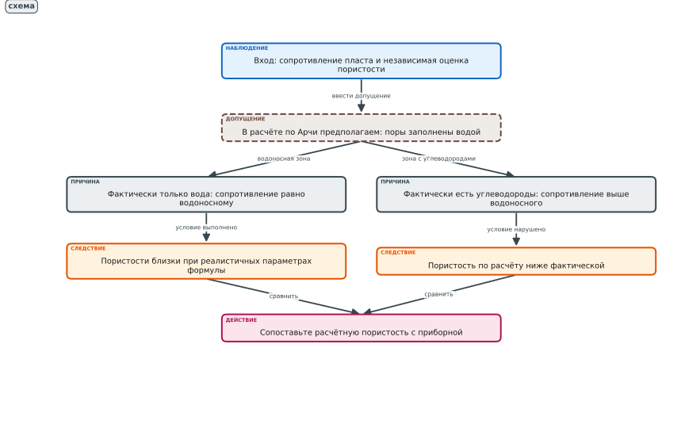

Стр. 130 · Basis for the technique
From Chapter 1, Archie's equation can be solved for porosity:
Log InterpretationШаг 26 из 66
В книге: «Basis for the technique» стр. 130
Опирается на: шаг 25 «Как получить пористость по сопротивлению» (предпосылка), шаг 8 «Как оценить воду вдали от ствола» (предпосылка)
Пористость по сопротивлению не всегда равна фактической.
При углеводородах расчёт по водяной модели даёт меньшую пористость.
Пороговая идея. Пористость, вычисленная при допущении полного водонасыщения, не равна фактической во всех пластах. модель



На экране два входа: что могло вызвать разницу между двумя оценками?
Допущения: Без числового примера: показано направление отличий, а не величина эффекта..
Уравнение Арчи можно решить для пористости. Для водяного варианта принимают водонасыщенность равной единице. Если поры действительно заполнены водой, истинное сопротивление совпадает с сопротивлением полностью водонасыщенного пласта. Если параметры близки к фактическим, расчёт в водоносном пласте близок к фактической пористости. стр. 130
«From Chapter 1, Archie's equation can be solved for porosity:»
«If the water-bearing case is considered, where $S_w = 1$, the equation reduces to:»
«By using the form of the equation above (7.19), the water-filled porosity is determined.»
«Where the formation is actually water filled, $R_t$ reverts to the water-bearing resistivity ($R_o$).»
«The porosity calculated from this equation is close to the actual formation porosity, assuming that the parameters in the equation are close to the actual formation parameters.»
При углеводородах истинное сопротивление выше водного эталона, а расчётная пористость ниже фактической. Традиционно кривую строят на дорожке ПС и сравнивают её ход с кривой ПС. Можно наложить её на приборную пористость. Снижение расчётной кривой относительно приборной авторы считают признаком углеводородов. стр. 130
«When the formation contains hydrocarbons, $R_t$ is greater than $R_o$,»
«When the formation contains hydrocarbons, $R_t$ is greater than $R_o$, and the calculated porosity is less than the actual formation porosity.»
«Traditionally this curve has been plotted in the same log track as the SP curve, and its movement compared to the SP.»
«It can also be plotted in the same track as a porosity curve from one of the porosity tools, where decreases in conductivity-derived porosity with respect to the porosity curve indicate the presence of hydrocarbons.»
Авторы предлагают оценивать водонасыщенность отношением пористости по проводимости к фактической. Это отдельная оценка, приведённая авторами. стр. 130
«Water saturation can be estimated by the following equation:»
Не следует считать отношение пористостей общей алгебраической перестановкой формул для произвольных показателей. пояснение модели
Решение на данных
Сопоставьте кривые, учитывая пригодность параметров расчёта. стр. 130
Уменьшение расчётной пористости относительно приборной указывает на возможные углеводороды.
Дано: Поры заполнены водой, а параметры расчёта близки к фактическим. (модель)
В водоносном случае сопротивление совпадает с водным эталоном.
Дано: Расчёт по водному допущению ниже приборной пористости. (модель)
При углеводородах авторы ожидают снижение расчётной пористости.
Пористость из общего уравнения Арчи. стр. 130
| Обозначение | Что это | Единицы |
|---|---|---|
| $\phi$ | пористость, доля объёма породы, занятая порами | доля |
| $a$ | коэффициент извилистости | — |
| $R_w$ | сопротивление пластовой воды | — |
| $R_t$ | истинное сопротивление пласта | — |
| $S_w$ | доля пор, заполненная водой | доля |
| $m$ | показатель цементации | — |
| $n$ | показатель насыщения | — |
Пористость при допущении полного водонасыщения. стр. 130
| Обозначение | Что это | Единицы |
|---|---|---|
| $\phi$ | пористость, доля объёма породы, занятая порами | доля |
| $a$ | коэффициент извилистости | — |
| $R_w$ | сопротивление пластовой воды | — |
| $R_t$ | истинное сопротивление пласта | — |
| $m$ | показатель цементации | — |
Приведённая авторами оценка водонасыщенности по отношению пористостей. стр. 130
| Обозначение | Что это | Единицы |
|---|---|---|
| $S_w$ | доля пор, заполненная водой | доля |
| $\phi_{conductivity}$ | пористость по проводимости | доля |
| $\phi_{actual}$ | фактическая пористость | доля |
Ошибка: Пористость по сопротивлению всегда равна фактической.
На самом деле: При углеводородах полное водонасыщение — неверное допущение, и расчётная пористость ниже фактической. стр. 130
Расхождение расчёта и приборной пористости — интерпретируемый признак.
Сравнить расчётную метрику при эталонном состоянии с отдельно измеренной метрикой.
Где аналогия перестаёт работать: Здесь эталон зависит от свойств породы и пластовой воды, а не от заведомо исправного сервиса.
Отношение пористостей воспроизведено как оценка авторов. Не следует считать его общей алгебраической перестановкой предыдущих формул для произвольных показателей.
Верный ответ: При полном водонасыщении и близких к фактическим параметрах
Одного допущения о воде недостаточно: параметры расчёта должны описывать пласт. Где это в тексте (стр. 130) →
Верный ответ: Расчётная пористость ниже фактической; Истинное сопротивление выше водного эталона
Углеводороды меняют сопротивление и тем самым результат обратного расчёта. Где это в тексте (стр. 130) →
Все утверждения шага с дословной цитатой автора и страницей книги (по PDF).
Уравнение Арчи можно решить относительно пористости. наблюдение
«From Chapter 1, Archie's equation can be solved for porosity:»
В полностью водонасыщенном случае водонасыщенность равна единице. допущение
«If the water-bearing case is considered, where $S_w = 1$, the equation reduces to:»
Подстановка допущения о полном заполнении водой даёт пористость в предположении водонасыщения. вывод
«By using the form of the equation above (7.19), the water-filled porosity is determined.»
Там, где поры действительно заполнены водой, истинное сопротивление становится сопротивлением водонасыщенного пласта. вывод
«Where the formation is actually water filled, $R_t$ reverts to the water-bearing resistivity ($R_o$).»
Расчёт близок к фактической пористости, если значения параметров в формуле близки к фактическим. допущение
«The porosity calculated from this equation is close to the actual formation porosity, assuming that the parameters in the equation are close to the actual formation parameters.»
При углеводородах истинное сопротивление выше сопротивления водонасыщенного пласта. вывод
«When the formation contains hydrocarbons, $R_t$ is greater than $R_o$,»
При углеводородах расчётная пористость меньше фактической. вывод
«When the formation contains hydrocarbons, $R_t$ is greater than $R_o$, and the calculated porosity is less than the actual formation porosity.»
Традиционно эту кривую строят на дорожке ПС и сопоставляют изменения кривых. наблюдение
«Traditionally this curve has been plotted in the same log track as the SP curve, and its movement compared to the SP.»
При совмещении с приборной кривой понижение расчётной пористости относительно приборной указывает на присутствие углеводородов. вывод
«It can also be plotted in the same track as a porosity curve from one of the porosity tools, where decreases in conductivity-derived porosity with respect to the porosity curve indicate the presence of hydrocarbons.»
Для оценки водонасыщенности авторы предлагают делить пористость по проводимости на фактическую пористость. вывод
«Water saturation can be estimated by the following equation:»
Стр. 130 · Basis for the technique
From Chapter 1, Archie's equation can be solved for porosity:
Стр. 130 · Basis for the technique
$$\phi = \left(\frac{a \times R_w}{R_t \times S_w^n}\right)^{\frac{1}{m}} \tag{7.18}$$
Стр. 130 · Basis for the technique
If the water-bearing case is considered, where $S_w = 1$, the equation reduces to:
Стр. 130 · Basis for the technique
$$\phi = \left(\frac{a \times R_w}{R_t}\right)^{\frac{1}{m}} \tag{7.19}$$
Стр. 130 · Basis for the technique
By using the form of the equation above (7.19), the water-filled porosity is determined. Where the formation is actually water filled, $R_t$ reverts to the water-bearing resistivity ($R_o$). The porosity calculated from this equation is close to the actual formation porosity, assuming that the parameters in the equation are close to the actual formation parameters. When the formation contains hydrocarbons, $R_t$ is greater than $R_o$, and the calculated porosity is less than the actual formation porosity.
Стр. 130 · Basis for the technique
Traditionally this curve has been plotted in the same log track as the SP curve, and its movement compared to the SP. It can also be plotted in the same track as a porosity curve from one of the porosity tools, where decreases in conductivity-derived porosity with respect to the porosity curve indicate the presence of hydrocarbons.
Стр. 130 · Basis for the technique
Water saturation can be estimated by the following equation:
Стр. 130 · Basis for the technique
$$S_w = \frac{\phi_{conductivity}}{\phi_{actual}} \tag{7.20}$$
На этот шаг опираются: шаг 27 «Когда расчётная пористость слишком низкая».
Что выдаёт пористость по сопротивлению
Ссылки в ответе ведут к исходному тексту.